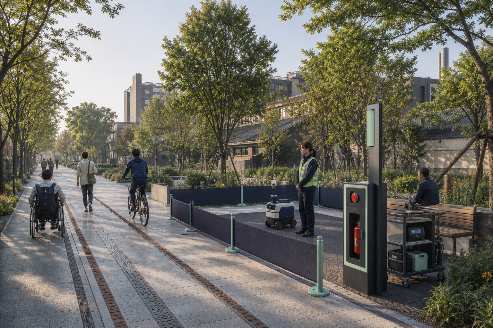
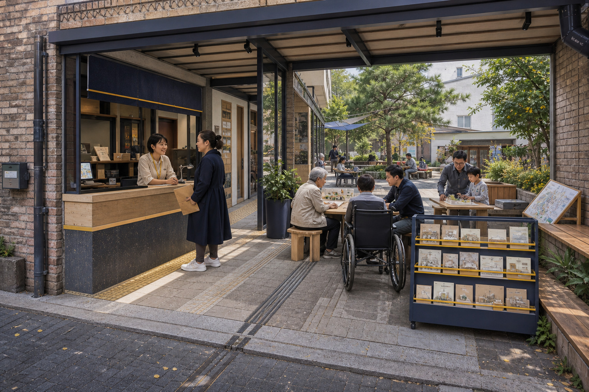
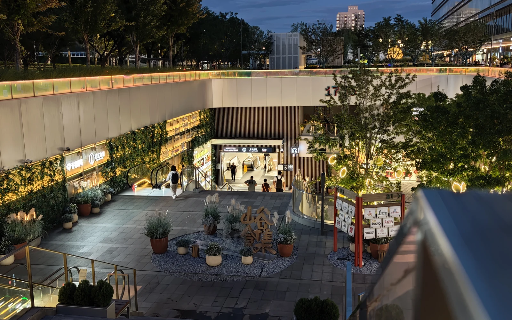
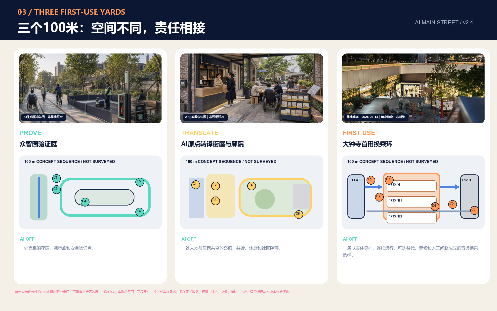

AI生成概念氛围｜非现场照片PROVE
众智园验证庭
能否在不挤占普通通行的前提下安全工作？
AI OFF 一处完整的花园、观察廊和安全咨询点。
AI MAIN STREET / v2.4
让百年京张成为每一项AI进入城市前都必须经过、也可以被公众叫停的首发公共试验线。



AI生成概念氛围｜非现场照片PROVE
能否在不挤占普通通行的前提下安全工作？
AI OFF 一处完整的花园、观察廊和安全咨询点。

AI生成概念氛围｜非现场照片TRANSLATE
普通人能否理解、拒绝、修正并安全采用？
AI OFF 一处人才与居民共享的咨询、共读、休息和社区院落。

现场观察｜2026-08-13｜单次傍晚｜非测绘FIRST USE
一次真实到达能否先被看懂、连续通行，再选择AI服务？
AI OFF 一条以实体导向、连续通行、可达替代、等候和人工问路成立的普通换乘路径。



每处均为代表性的100米概念研究窗口，不是官方片区边界、道路红线、实测总平面、工程尺寸、投资或实施承诺；须在正式数据、权属、遗产、交通、消防、市政、运营授权与专业审查后深化。